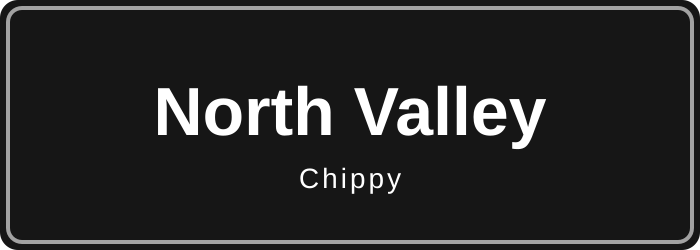
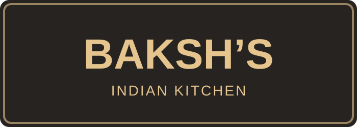

Halal reported by local contributor
Mansha Sweet Centre
Nelson · Food explainer and contact information · Menu and prices not verified
Learn about common South Asian sweets and savouries before visiting.
Read the Mansha food guideHours unconfirmed
YOUR LOCAL FOOD GUIDE
Discover takeaways across Nelson, Colne and Pendle, see real customer food photos, and plan an order with friends.
 Real food, shared locallyChicken Tikka on Naan · Mansha, NelsonView customer gallery →
Real food, shared locallyChicken Tikka on Naan · Mansha, NelsonView customer gallery →Our food dictionary explains 45 South Asian dishes and menu words in everyday English. Search for naan, samosa, biryani and more.
Choose several takeaways, list everyone’s food and split the total between 2, 3, 4 or more people.
Taj’s choices automatically filter these listings. You can adjust the filters afterwards.
Opening times are estimates, not live status. Businesses without listed hours are excluded when this is selected. Bank holidays may differ.
11 listings available
Halal reported by local contributor
Nelson · Food explainer and contact information · Menu and prices not verified
Learn about common South Asian sweets and savouries before visiting.
Read the Mansha food guideHours unconfirmed

Halal reported by local contributor
Nelson · Indian / curry
3 Stanley Street, Nelson, BB9 7EL
See menu & detailsHours listed · check first
Halal reported by local contributor
Nelson · Kebabs / Indian
102 Manchester Road, Nelson, BB9 7HD
See menu & detailsHours unconfirmed

Non-halal reported by local contributor
Colne · Fish and chips
69 North Valley Road, Colne, BB8 9AQ
See menu & detailsHours listed · check first
Non-halal reported by local contributor
Colne · Fish and chips
12–14 Market Place, Colne, BB8 0HY
See menu & detailsHours unconfirmed
Halal reported by local contributor
Colne · Indian
19 Albert Road, Colne, BB8 0RY
See menu & detailsHours unconfirmed
Non-halal reported by local contributor
Barrowford · Chinese
1 King Edward Terrace, Gisburn Road, Barrowford, BB9 8NJ
See menu & detailsHours unconfirmed
Halal reported by local contributor
Barrowford · Indian
7 Gladstone Terrace, Gisburn Road, Barrowford, BB9 8NL
See menu & detailsHours unconfirmed
Non-halal reported by local contributor
Barrowford · Fish and chips
3 Nora Street, Barrowford, Nelson, BB9 8NS
See menu & detailsHours unconfirmed

Halal reported by local contributor
Brierfield · Indian
49 Burnley Road, Brierfield, Nelson, BB9 5JR
See menu & detailsHours listed · check first
Halal reported by local contributor
Brierfield · Burgers
54 Halifax Road, Brierfield, Nelson, BB9 5BB
See menu & detailsHours unconfirmed
No matching listings yet. Suggest a local takeaway.
Our first listings cover Nelson, Colne, Barrowford and Brierfield. We will expand to more Pendle areas as information is checked.
Know of a local menu that should be included? Find out how to suggest it.
Explore real local recommendations, first-time visitor tips and customer food photographs. Help build a community guide to Nelson’s food favourites.
Know a brilliant curry, kebab, pizza or other takeaway favourite? Share what you ordered, its approximate price and why you recommend it. We review contributions before publishing.
Know a missing takeaway, spotted an incorrect menu price or have an idea? Share your suggestion and help improve the directory.
Menu prices are dated snapshots or clearly marked estimates. Confirm prices and availability by telephone or in the shop before ordering. Coloured badges are directory graphics, not official business logos.